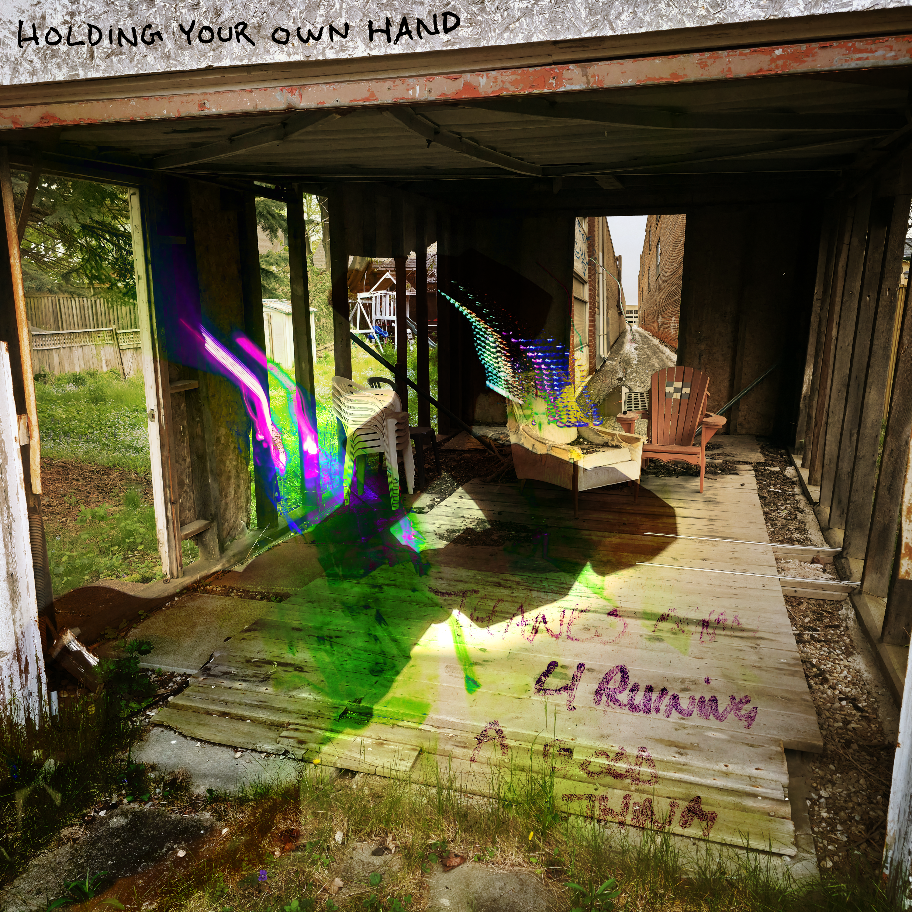

Watercolour Markers is Holding Your Own Hand's debut album. It explores Robin's long and complex relationship with trust, love, and sense of self.
The album was recorded in Robin's bedroom during her free time after work and on weekends over the course of about 5 months from March to July of 2026.
Watercolour Markers was released
November 12th, 2026.